All this has come upon us...
Portfolio of 42 archival pigment prints of acrylic, gouache and colored pencil works on paper exhibited at the Terezin Ghetto Museum from April to July 2014. Includes folio with the titles, Hebrew psalms and descriptions of the all the artworks. Prints housed in an archival clamshell case imprinted with “ALL THIS HAS COME UPON US...” and the artist’s name. Edition limited to 60 numbered sets signed by the artist and ten sets hors commerce A to J.

The Bible tells how pharaoh enslaved the Israelites in Egypt. The Hebrew word for pharaoh can be broken up to peh rah, which means evil speech.

To this day, Jews mourn the destruction of Jerusalem and the First Temple by King Nebuchadnezzar of Babylon. Legend says that when Nebuchadnezzar declared himself a god, he was changed into a beast, partly resembling a lion.

Throughout their long wanderings in exile, Jews were always most at home in their sacred books. Of the most loved were books with prayers, songs and memories of Jerusalem.

The Bible calls idolatry an “abomination.” When King Antiochus IV conquered Jerusalem, to promote Greek culture he forbid Jewish religious practices, even desecrating the Holy Temple with an idol of Zeus. The festival of Hanukkah celebrates the Temple’s re-dedication following the victory over Antiochus.

On their way to free Jerusalem from the Saracens, Crusaders killed thousands of Jews in the Rhine Valley. A chronicle asserted, “We go to fight God’s enemies in the East; but before our eyes are Jews, a race more hostile to God than any other.” Of the massacre in Mainz, Solomon bar Samson lamented, “Why did the heavens not darken when eleven hundred souls were slaughtered?”

The First Crusade capture of Jerusalem resulted in the massacre of Muslims in their mosque and the burning of Jews in the main synagogue. Some Muslims and Jews survived, either escaping or taken prisoner to be ransomed.

The Third Crusade, led by Richard the Lion-Heart, stirred anti-Jewish riots across England. In York, Jews gathered for protection in Clifford’s Tower. Rather than be butchered by the mob outside, many Jews took their own lives. Those who surrendered were murdered. All records of debts owed to Jews were burned.

In medieval Christian art, Ecclesia and Synagoga personify the victorious Church and defeated Judaism. Often sculpted as young women, Ecclesia is erect and triumphant in contrast to the blindfolded and dejected Synagoga.

The Lateran Council in 1215 decreed that Jews “be publicly differentiated by their clothing.” Throughout Europe, Jews were forced to wear a “Badge of Shame,” often a yellow circle. Yellow implied wickedness and the circular form of a coin might have signified the Jews’ role as moneylender.

The Talmud is a collection of ancient rabbinic writings on Jewish law and tradition. In the Jewish religion, the Talmud is second only to the Bible. Condemned as blasphemous to Christianity and a barrier to converting the Jews, the Talmud was repeatedly censored and burned. The most infamous burning was in Paris. A thousand years earlier when Romans wrapped Rabbi Hanina in a Torah scroll and set it on fire his disciples called out, “Rabbi, what do you see?” His answer expressed the indestructible nature of the Law, “The parchment is burning but the letters are soaring on high.”

The Judensau (Jew’s pig) is a derogatory medieval depiction of Jews in obscene contact with a large sow. The image reflected the tendency to dehumanize Jews iconographically. The pig was used intentionally since for Jews it is an object of religious prohibition and revulsion. Over 25 Judensau remain on German churches. During the Nazi period, school children were taken to see them.

The Black Death annihilated a third of Europe’s population. Rumor attributed the devastating plague to an international conspiracy of Jewry to poison all Christendom. Jews arrested and tortured not surprisingly confessed to anything. In hundreds of towns, falsely accused Jews were butchered and burned to death.

Before the Black Death massacre in Erfurt, Germany, Jews preemptively hid their valuables including a ceremonial gold wedding ring unearthed in 1998. To no avail, Pope Clement VI acknowledged that Jews died of the plague as frequently as Christians and there was no reason to blame them.

One Easter, during a devastating pogrom, Prague’s Jews fled for safety to their synagogues. Rabbi Avigdor Kara, who lost his entire family, wrote the eulogy All that Suffering, still read each year on the holiest day of the Jewish calendar, Yom Kippur. For centuries bloodstains remained on a synagogue’s walls as a reminder of the slaughter. Legend says that whenever there is Jewish suffering in the world, the walls again turn red.

“Humiliation and wretchedness were stamped upon them,” says the Qur’an regarding the Jews. As a rule, Jews living in Muslim lands were allowed to practice their religion as dhimmis (protected people). Yet, at times anti-Jewish sentiment surfaced if Jews became too influential. In Fez, Morocco, when the Sultan appointed a Jew as Prime Minister the town revolted. The Sultan and his Minister were assassinated and the Jews massacred.

The Spanish Inquisition was initiated to prevent conversos from engaging in Jewish practices, which as Christians they were to have rejected. Those who in secret continued to practice Judaism were called marranos. At public spectacles, heretics were burned at the stake in an auto-da-fe, “act of faith.”

King Ferdinand and Queen Isabella of Spain expelled from their lands the largest and most distinguished Jewish community in Europe. Jews who converted were welcome to stay.

In both Christian and Muslim countries, it was common for laws to mandate that synagogues could not be taller than churches or mosques.

God's governance of the world in accordance with justice is called Providence. Yet, how to explain the prosperity of the wicked and the suffering of the just? The explanation is the doctrine of reward and punishment in an afterlife when the good will be rewarded and the wicked punished.

Jewish messianic yearnings surged during times of great suffering. Shlomo Molcho, a Portuguese mystic, preached the certainty of imminent messianic redemption. He also may have declared himself the messiah to his disciples. After a brief remarkable career, the would-be messiah was burned at the stake.

Rabbinic sages say in the human heart are two impulses, good and evil. The wicked, influenced by the evil impulse, destroyed the Temple and exiled the Jews from their land. Against the evil impulse, the Torah is the great antidote.

Of the repressive laws under Czar Nicholas I, the harshest was the Cantonist law requiring Jewish boys from age 12 to serve in the Russian army 25 years. The straps of their tefillin were twisted into whips to flog the boys into icy rivers to be baptized. To escape conversion, many drowned themselves.

Pogrom is a Russian word meaning “to wreak havoc.” Russian pogroms against Jews were frequent and devastating. Jews referred to the violence in the south of Russia as the “storms in the negev,” negev being a biblical word for the south. Little or no effort was made to bring the attackers to justice.

“In every generation they rise up against us.” Jews recite these words each year at their seder meal on Passover, the festival that celebrates the deliverance of the Jewish people from slavery in Egypt.

On November 9–10, 1938, the Nazis instigated state sanctioned riots against the Jewish communities of Germany, Austria, and the Sudetenland. These attacks came to be known as Kristallnacht (“Night of Broken Glass”), a reference to the shattered windows of synagogues, Jewish businesses and homes looted and destroyed.

Arbeit macht frei, a German phrase meaning, "work makes free" was placed over the entrances to a number of Nazi concentration camps during World War II. The motto, of course, was a mockery, a false promise that those who worked hard would eventually be released.

In September 1943, more than five thousand Jews were deported from Terezin to Auschwitz. Unlike previous transports, they received unusual privileges: they did not undergo the usual selections and families were not divided up into various sections in the camp - hence the “family camp.” On the night of March 8, 1944 the Jewish holiday of Purim, exactly six months after their arrival, the family camp prisoners still living from that bleak September – 3792 persons - were murdered in the gas chambers. The absolute majority of them were Czech Jews. It was the deadliest night during the German occupation of the Czech lands.

From slavery in Egypt to the loss of their homeland, from persecution to exile, from pogroms to near annihilation, through faith the Jews endured while their enemies vanished.

The Hebrew title of the book of Psalms is the word tehillim, which means “Praises.” Psalms are recited by Jews individually and communally to offer praise and thanksgiving to God.

The Mourner’s Kaddish is a prayer recited in memory of the dead. Yet, the prayer makes no mention of death, loss or mourning. Nor is there mention of the person who died. Its theme is the greatness of God.

Psalm 126 is an inspiring recounting of the return of the Jewish people to their homeland from worldwide dispersion. Upon Israel’s independence, this joyful song was repeatedly considered for the national anthem.
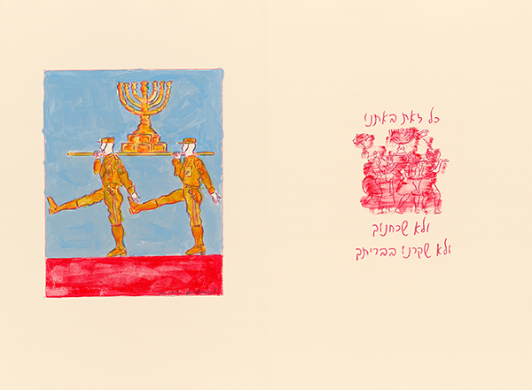
For centuries, Jews would read verses from the Book of Psalms both in times of great joy and of great suffering.
Psalm
Psalm 44:18 All this has come upon us, but we have not forgotten You, or been false to Your covenantFor centuries, Jews would read verses from the Book of Psalms both in times of great joy and of great suffering.
Pharaoh
Psalm 10:7 His mouth is full of curses, deceit and oppression; on the tip of his tongue are mischief and evilThe Bible tells how pharaoh enslaved the Israelites in Egypt. The Hebrew word for pharaoh can be broken up to peh rah, which means evil speech.
Nebuchadnezzar
Psalm 57:5 I am surrounded by lions, their teeth are spears and arrows and their tongue a sharp swordTo this day, Jews mourn the destruction of Jerusalem and the First Temple by King Nebuchadnezzar of Babylon. Legend says that when Nebuchadnezzar declared himself a god, he was changed into a beast, partly resembling a lion.
Exile
Psalm 137:1 By the rivers of Babylon we sat and wept as we remembered ZionThroughout their long wanderings in exile, Jews were always most at home in their sacred books. Of the most loved were books with prayers, songs and memories of Jerusalem.
Abomination
Psalm 27:3 Though an army surrounds me, my heart will not fear; even if attacked I am confidentThe Bible calls idolatry an “abomination.” When King Antiochus IV conquered Jerusalem, to promote Greek culture he forbid Jewish religious practices, even desecrating the Holy Temple with an idol of Zeus. The festival of Hanukkah celebrates the Temple’s re-dedication following the victory over Antiochus.
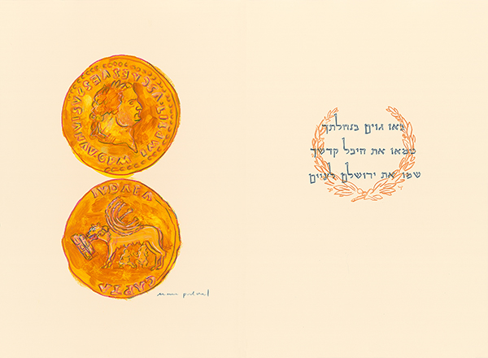
After Titus destroyed Jerusalem in the year 70, the Romans built the city Aelia Capitolina on its ruins. With the loss of their homeland, Jews moved to distant lands. Though dispersed, they refused to abandon their faith.
Titus 70
Psalm 79 O God, pagans have conquered Your land, defiled Your Holy Temple and left Jerusalem in ruinsAfter Titus destroyed Jerusalem in the year 70, the Romans built the city Aelia Capitolina on its ruins. With the loss of their homeland, Jews moved to distant lands. Though dispersed, they refused to abandon their faith.
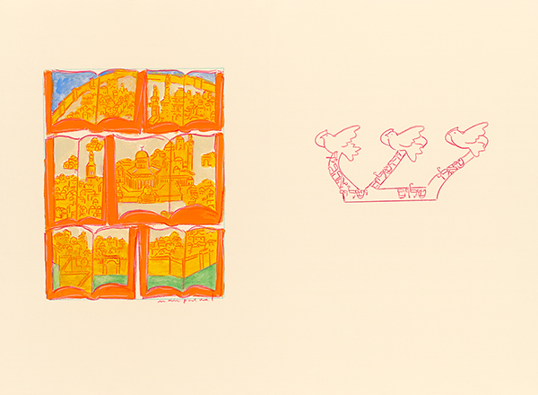
Though Jerusalem is called “City of Peace,” no place has been fought over more.
Prayer
Psalm 122:6 Pray for the peace of Jerusalem: may those who love you be at peaceThough Jerusalem is called “City of Peace,” no place has been fought over more.
Why Did the Heavens Not Darken? 1096
Psalm 94:21 The wicked gather together against the soul of the righteous and condemn innocent bloodOn their way to free Jerusalem from the Saracens, Crusaders killed thousands of Jews in the Rhine Valley. A chronicle asserted, “We go to fight God’s enemies in the East; but before our eyes are Jews, a race more hostile to God than any other.” Of the massacre in Mainz, Solomon bar Samson lamented, “Why did the heavens not darken when eleven hundred souls were slaughtered?”
The Holy City 1099
Psalm 3:3 Many attack me; many say about me, “God will not help him”The First Crusade capture of Jerusalem resulted in the massacre of Muslims in their mosque and the burning of Jews in the main synagogue. Some Muslims and Jews survived, either escaping or taken prisoner to be ransomed.
York Tower 1189
Psalm 142:5 I look for someone to help me, I have no friend; nowhere can I flee, no one cares about meThe Third Crusade, led by Richard the Lion-Heart, stirred anti-Jewish riots across England. In York, Jews gathered for protection in Clifford’s Tower. Rather than be butchered by the mob outside, many Jews took their own lives. Those who surrendered were murdered. All records of debts owed to Jews were burned.
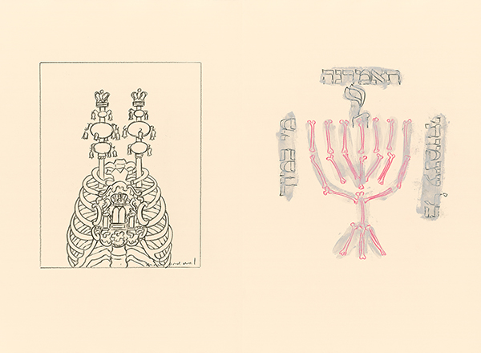
The ultimate act of Kiddush ha-Shem, sanctification of God’s holy name, is when a Jew sacrifices his or her life rather than transgressing any of God’s cardinal laws. Eyewitnesses chronicled a number of Jewish communal self- martyrdoms, which came to be revered as the purest expression of the devotion to God.
Martyrdom
Psalm 35:10 All my bones will say, “Lord, who is like You?”The ultimate act of Kiddush ha-Shem, sanctification of God’s holy name, is when a Jew sacrifices his or her life rather than transgressing any of God’s cardinal laws. Eyewitnesses chronicled a number of Jewish communal self- martyrdoms, which came to be revered as the purest expression of the devotion to God.
Ecclesia and Synagoga
Psalm 119:78 Let the proud be ashamed, for they have slandered me without cause; but I will study Your commandmentsIn medieval Christian art, Ecclesia and Synagoga personify the victorious Church and defeated Judaism. Often sculpted as young women, Ecclesia is erect and triumphant in contrast to the blindfolded and dejected Synagoga.
Circles
Psalm 25:2 My God, in You I trust, may I not be ashamed; may my enemies not triumph over meThe Lateran Council in 1215 decreed that Jews “be publicly differentiated by their clothing.” Throughout Europe, Jews were forced to wear a “Badge of Shame,” often a yellow circle. Yellow implied wickedness and the circular form of a coin might have signified the Jews’ role as moneylender.
Letters Soaring 1240
Psalm 119:160 All Your words are true and eternalThe Talmud is a collection of ancient rabbinic writings on Jewish law and tradition. In the Jewish religion, the Talmud is second only to the Bible. Condemned as blasphemous to Christianity and a barrier to converting the Jews, the Talmud was repeatedly censored and burned. The most infamous burning was in Paris. A thousand years earlier when Romans wrapped Rabbi Hanina in a Torah scroll and set it on fire his disciples called out, “Rabbi, what do you see?” His answer expressed the indestructible nature of the Law, “The parchment is burning but the letters are soaring on high.”
Judensau
Psalm 22:8 All who see me laugh at me; they smirk their lips, they shake their headsThe Judensau (Jew’s pig) is a derogatory medieval depiction of Jews in obscene contact with a large sow. The image reflected the tendency to dehumanize Jews iconographically. The pig was used intentionally since for Jews it is an object of religious prohibition and revulsion. Over 25 Judensau remain on German churches. During the Nazi period, school children were taken to see them.
Black Plague 1348-1349
Psalm 35:16 With malicious mocking they gnash their teeth at meThe Black Death annihilated a third of Europe’s population. Rumor attributed the devastating plague to an international conspiracy of Jewry to poison all Christendom. Jews arrested and tortured not surprisingly confessed to anything. In hundreds of towns, falsely accused Jews were butchered and burned to death.
Erfurt 1349
Psalm 35:11 False witnesses testify against me about things I know nothing ofBefore the Black Death massacre in Erfurt, Germany, Jews preemptively hid their valuables including a ceremonial gold wedding ring unearthed in 1998. To no avail, Pope Clement VI acknowledged that Jews died of the plague as frequently as Christians and there was no reason to blame them.
All that Suffering 1389
Psalm 59:5 Though I have done nothing wrong they prepare to attack meOne Easter, during a devastating pogrom, Prague’s Jews fled for safety to their synagogues. Rabbi Avigdor Kara, who lost his entire family, wrote the eulogy All that Suffering, still read each year on the holiest day of the Jewish calendar, Yom Kippur. For centuries bloodstains remained on a synagogue’s walls as a reminder of the slaughter. Legend says that whenever there is Jewish suffering in the world, the walls again turn red.
Fez 1465
Psalm 37:14 Evil men draw their swords, bend their bows, to kill the oppressed and needy, to slay the decent“Humiliation and wretchedness were stamped upon them,” says the Qur’an regarding the Jews. As a rule, Jews living in Muslim lands were allowed to practice their religion as dhimmis (protected people). Yet, at times anti-Jewish sentiment surfaced if Jews became too influential. In Fez, Morocco, when the Sultan appointed a Jew as Prime Minister the town revolted. The Sultan and his Minister were assassinated and the Jews massacred.
Auto da Fe
Psalm 102:4 For my days are consumed in smoke, and my bones burn as in a furnaceThe Spanish Inquisition was initiated to prevent conversos from engaging in Jewish practices, which as Christians they were to have rejected. Those who in secret continued to practice Judaism were called marranos. At public spectacles, heretics were burned at the stake in an auto-da-fe, “act of faith.”
Expulsion 1492
Psalm 119:54 Your laws are songs to me wherever I may liveKing Ferdinand and Queen Isabella of Spain expelled from their lands the largest and most distinguished Jewish community in Europe. Jews who converted were welcome to stay.
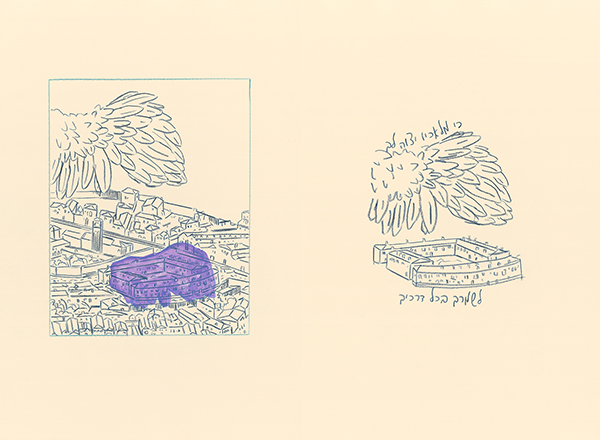
The word “ghetto” originated from the name of the Jewish quarter in Venice where Jews were forced to live. During World War II, when Jews were again confined to ghettos, they were degraded, starved and murdered.
Ghetto 1516
Psalm 91:11 For He will command His angels to protect you wherever you goThe word “ghetto” originated from the name of the Jewish quarter in Venice where Jews were forced to live. During World War II, when Jews were again confined to ghettos, they were degraded, starved and murdered.
Shadow
Psalm 13:3 How long will I have troubling thoughts, sorrow in my heart every day? How long shall my enemy dominate me?In both Christian and Muslim countries, it was common for laws to mandate that synagogues could not be taller than churches or mosques.
Providence
Psalm 112:10 The wicked will see it and be angry; he will gnash his teeth and waste away;the hope of the wicked will amount to nothingGod's governance of the world in accordance with justice is called Providence. Yet, how to explain the prosperity of the wicked and the suffering of the just? The explanation is the doctrine of reward and punishment in an afterlife when the good will be rewarded and the wicked punished.
Signature of a False Messiah 1532
Psalm 45:2 Noble words stir my heart; I speak my deeds to the king, my tongue is the pen of a skillful scribeJewish messianic yearnings surged during times of great suffering. Shlomo Molcho, a Portuguese mystic, preached the certainty of imminent messianic redemption. He also may have declared himself the messiah to his disciples. After a brief remarkable career, the would-be messiah was burned at the stake.
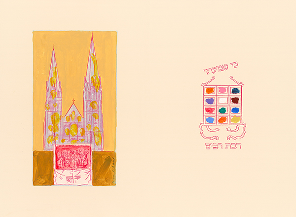
In front of cathedrals and churches, Passion Plays re-enacted the trial and crucifixion of Jesus, blaming Jews as collectively and eternally guilty of deicide. Not infrequently, enraged audiences attacked Jews for revenge.
Inherited Hatred
Psalm 31:14 I hear the slander of manyIn front of cathedrals and churches, Passion Plays re-enacted the trial and crucifixion of Jesus, blaming Jews as collectively and eternally guilty of deicide. Not infrequently, enraged audiences attacked Jews for revenge.
Good and Evil
Psalm 94:3 How long will the wicked triumph?Rabbinic sages say in the human heart are two impulses, good and evil. The wicked, influenced by the evil impulse, destroyed the Temple and exiled the Jews from their land. Against the evil impulse, the Torah is the great antidote.
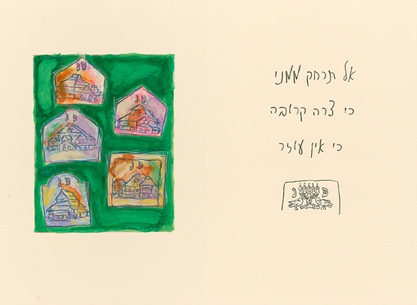
When Cossacks led by Bohdan Chmielnicki slaughtered half of Ukrainian and Polish Jewry, Jews named the massacres The Evil Decrees of ‘48 and ’49. Frequently employed by the nobility as tax collectors, Jews were a convenient scapegoat. Of the savagery an eyewitness wrote, “Some were cut into pieces, others were ordered to dig graves into which Jewish women and children were thrown and buried alive. Jews were given rifles and ordered to kill each other...”
Evil Decrees 1648-1649
Psalm 22:12 Do not be far from me, for trouble is near and there is no one to helpWhen Cossacks led by Bohdan Chmielnicki slaughtered half of Ukrainian and Polish Jewry, Jews named the massacres The Evil Decrees of ‘48 and ’49. Frequently employed by the nobility as tax collectors, Jews were a convenient scapegoat. Of the savagery an eyewitness wrote, “Some were cut into pieces, others were ordered to dig graves into which Jewish women and children were thrown and buried alive. Jews were given rifles and ordered to kill each other...”
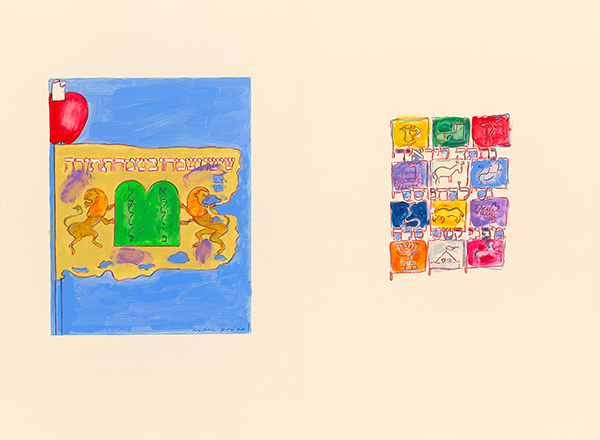
Every year, when the annual reading of the Torah concludes and begins anew the congregation says in Hebrew Chazak, chazak, v’nitchazek meaning “Be strong, be strong, and may we strengthen one another.”
Be Strong, Be Strong
Psalm 60:6 You give Your loyal followers a banner around which to rally toEvery year, when the annual reading of the Torah concludes and begins anew the congregation says in Hebrew Chazak, chazak, v’nitchazek meaning “Be strong, be strong, and may we strengthen one another.”
Cantonists 1827
Psalm 119:141 I am small and despised, yet I have not forgotten Your teachingsOf the repressive laws under Czar Nicholas I, the harshest was the Cantonist law requiring Jewish boys from age 12 to serve in the Russian army 25 years. The straps of their tefillin were twisted into whips to flog the boys into icy rivers to be baptized. To escape conversion, many drowned themselves.
Storms in the South 1881-1884
Psalm 55:6 Fear and trembling grips me; horror overwhelms mePogrom is a Russian word meaning “to wreak havoc.” Russian pogroms against Jews were frequent and devastating. Jews referred to the violence in the south of Russia as the “storms in the negev,” negev being a biblical word for the south. Little or no effort was made to bring the attackers to justice.
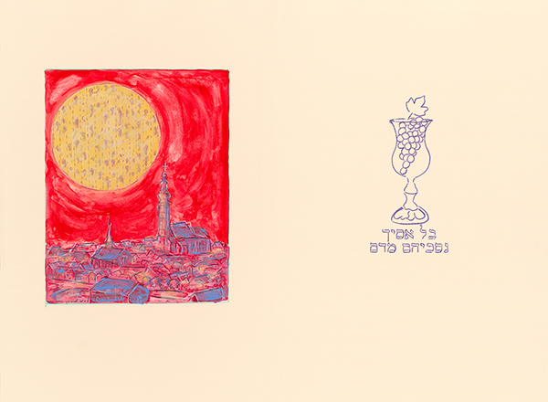
The “blood libel,” also known as “ritual murder,” refers to the false allegation that Jews kill Christians to use their blood in the baking of Passover matzah (unleavened bread). The accusation, dating back to the Middle Ages, is especially ludicrous because Jewish law prohibits consuming any blood. In 1899, a Jew from the Bohemian town of Polná was convicted of the murder of a Christian girl. A ritually inspired crime was alleged to be the motive.
Blood Libel Polná 1899
Psalm 16:4 I will have no part in their drink-offerings of bloodThe “blood libel,” also known as “ritual murder,” refers to the false allegation that Jews kill Christians to use their blood in the baking of Passover matzah (unleavened bread). The accusation, dating back to the Middle Ages, is especially ludicrous because Jewish law prohibits consuming any blood. In 1899, a Jew from the Bohemian town of Polná was convicted of the murder of a Christian girl. A ritually inspired crime was alleged to be the motive.
Every Generation
Psalm 25:19 See how many are my enemies, and how unjustly they hate me“In every generation they rise up against us.” Jews recite these words each year at their seder meal on Passover, the festival that celebrates the deliverance of the Jewish people from slavery in Egypt.
Kristallnacht 1938
Psalm 74:7 They burned Your sanctuary to the ground; desecrating the dwelling place of Your nameOn November 9–10, 1938, the Nazis instigated state sanctioned riots against the Jewish communities of Germany, Austria, and the Sudetenland. These attacks came to be known as Kristallnacht (“Night of Broken Glass”), a reference to the shattered windows of synagogues, Jewish businesses and homes looted and destroyed.
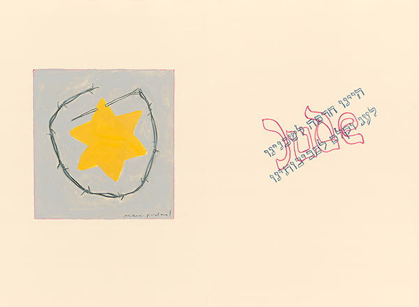
The wearing of a yellow badge, compulsory for Jews in some parts of Europe in the Middle Ages, was revived by the Nazi regime. A Jew caught without a badge was fined, imprisoned, or shot.
Yellow Star
Psalm 79:4 We are mocked by our neighbors, an object of scorn and ridicule to those around usThe wearing of a yellow badge, compulsory for Jews in some parts of Europe in the Middle Ages, was revived by the Nazi regime. A Jew caught without a badge was fined, imprisoned, or shot.
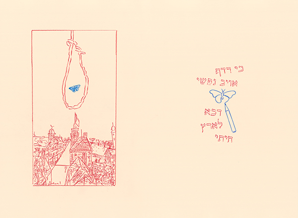
Among the most poignant documents of the Holocaust are poems and drawings by the imprisoned children of the Terezin Concentration Camp. Depicted is their daily misery as well as their hopes. Perhaps the most famous of the poems is “I never saw another butterfly,” by Pavel Friedman who was killed in Auschwitz. Terezin was unique in that it was created to conceal the German genocide of the Jews. This ghetto was the site of an International Red Cross Committee delegation visit in 1944, when the real suffering in the camp was hidden. With its many artists and intellectuals, culture flourished in Terezin - together with disease, starvation and constant fear of deportations to the east.
Terezin
Psalm 143:3 For the enemy has persecuted me; he has crushed my life down to the groundAmong the most poignant documents of the Holocaust are poems and drawings by the imprisoned children of the Terezin Concentration Camp. Depicted is their daily misery as well as their hopes. Perhaps the most famous of the poems is “I never saw another butterfly,” by Pavel Friedman who was killed in Auschwitz. Terezin was unique in that it was created to conceal the German genocide of the Jews. This ghetto was the site of an International Red Cross Committee delegation visit in 1944, when the real suffering in the camp was hidden. With its many artists and intellectuals, culture flourished in Terezin - together with disease, starvation and constant fear of deportations to the east.
Arbeit Macht Frei
Psalm 83:5 They say, “Let us destroy them as a nation so Israel’ s name will be remembered no more”Arbeit macht frei, a German phrase meaning, "work makes free" was placed over the entrances to a number of Nazi concentration camps during World War II. The motto, of course, was a mockery, a false promise that those who worked hard would eventually be released.
Czech Family Camp
Psalm 148:12 Young men and women, the old with the childrenIn September 1943, more than five thousand Jews were deported from Terezin to Auschwitz. Unlike previous transports, they received unusual privileges: they did not undergo the usual selections and families were not divided up into various sections in the camp - hence the “family camp.” On the night of March 8, 1944 the Jewish holiday of Purim, exactly six months after their arrival, the family camp prisoners still living from that bleak September – 3792 persons - were murdered in the gas chambers. The absolute majority of them were Czech Jews. It was the deadliest night during the German occupation of the Czech lands.
Faith
Psalm 119:87 They almost wiped me off the earth but I did not abandon Your commandmentsFrom slavery in Egypt to the loss of their homeland, from persecution to exile, from pogroms to near annihilation, through faith the Jews endured while their enemies vanished.
Praise
Psalm 8:2 How majestic is Your name throughout the earthThe Hebrew title of the book of Psalms is the word tehillim, which means “Praises.” Psalms are recited by Jews individually and communally to offer praise and thanksgiving to God.
Kaddish
Psalm 103:15 Man, his days are like those of grass, as a flower of the field that bloomsThe Mourner’s Kaddish is a prayer recited in memory of the dead. Yet, the prayer makes no mention of death, loss or mourning. Nor is there mention of the person who died. Its theme is the greatness of God.
A Song 1948
Psalm 126:5 Those who plant in tears will harvest in joyPsalm 126 is an inspiring recounting of the return of the Jewish people to their homeland from worldwide dispersion. Upon Israel’s independence, this joyful song was repeatedly considered for the national anthem.